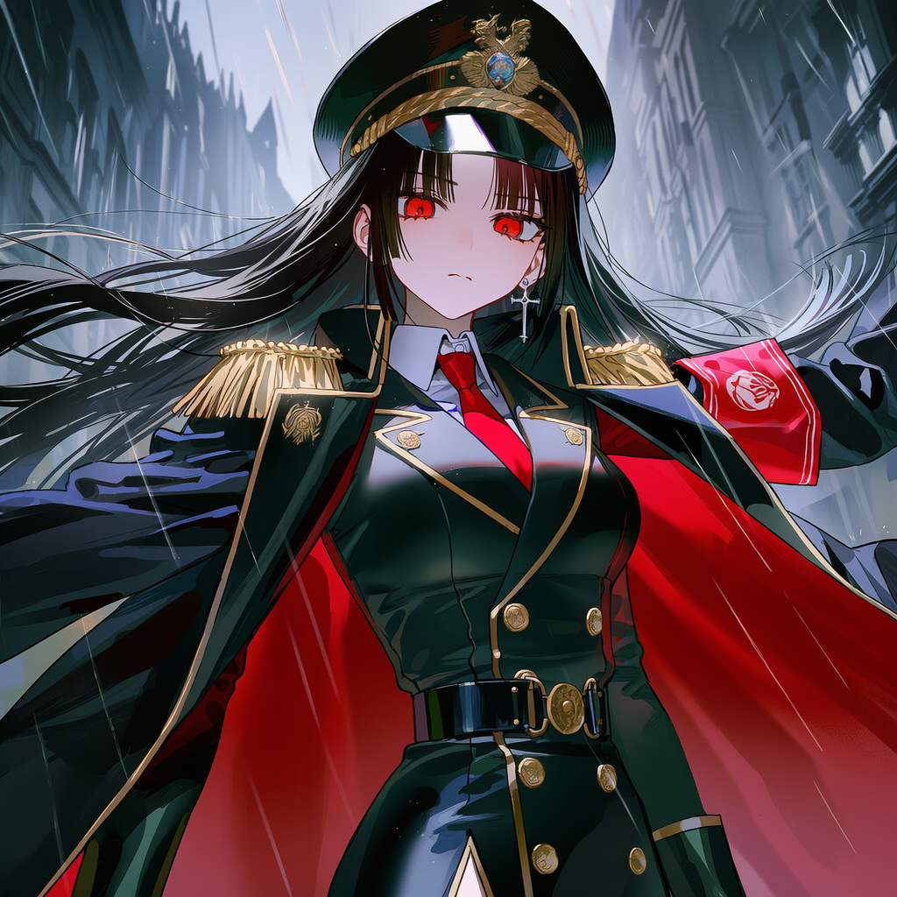
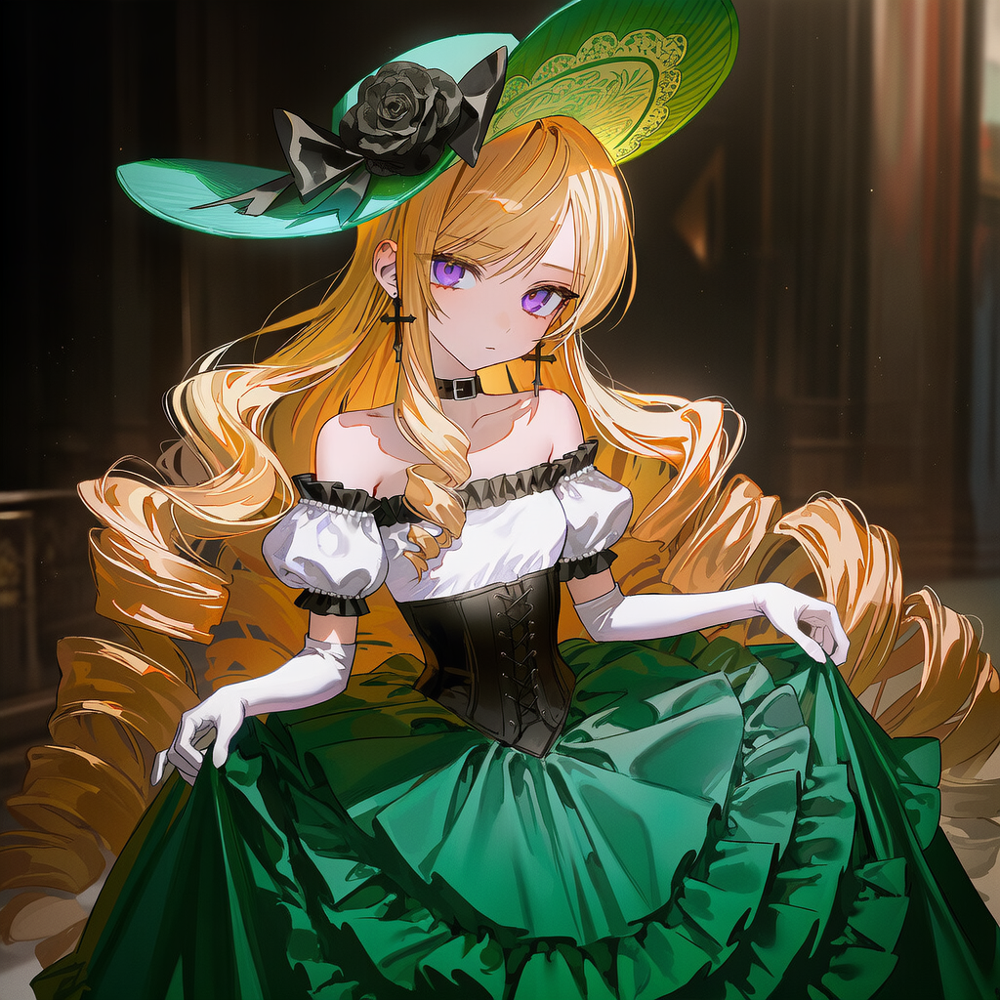
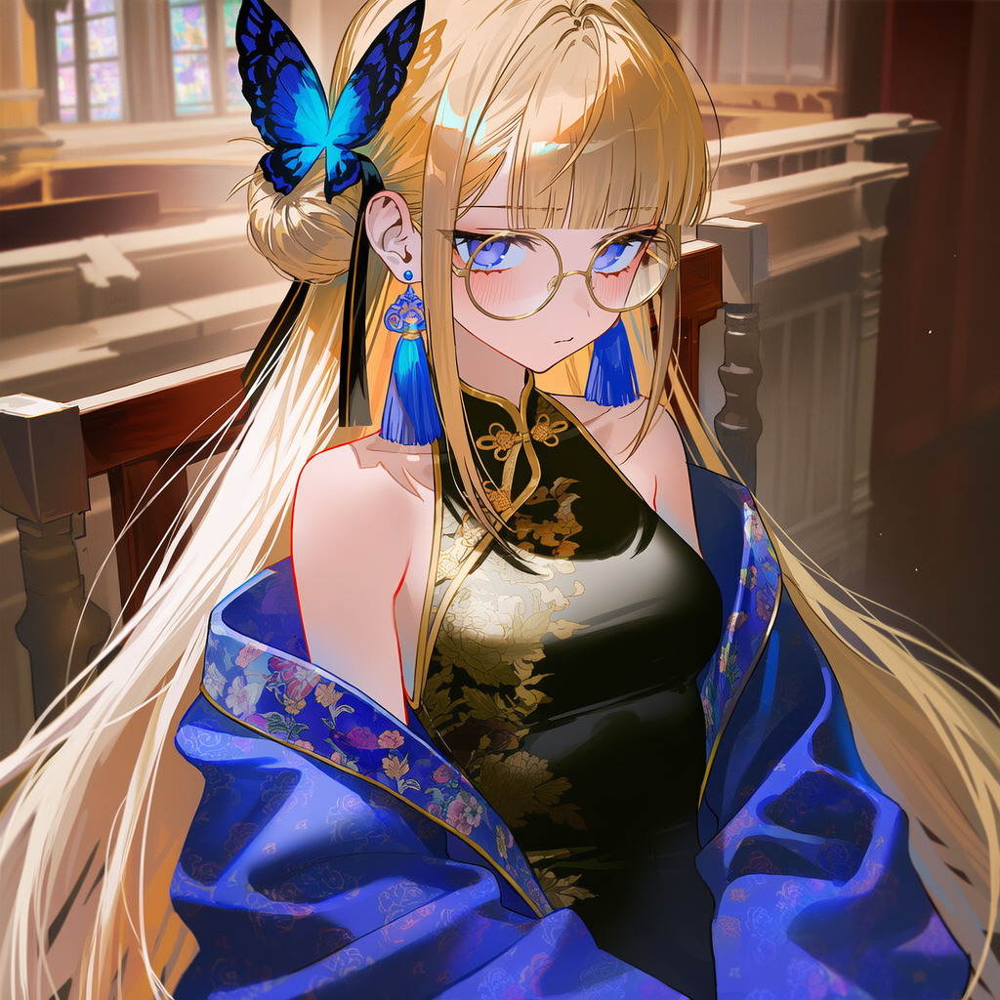
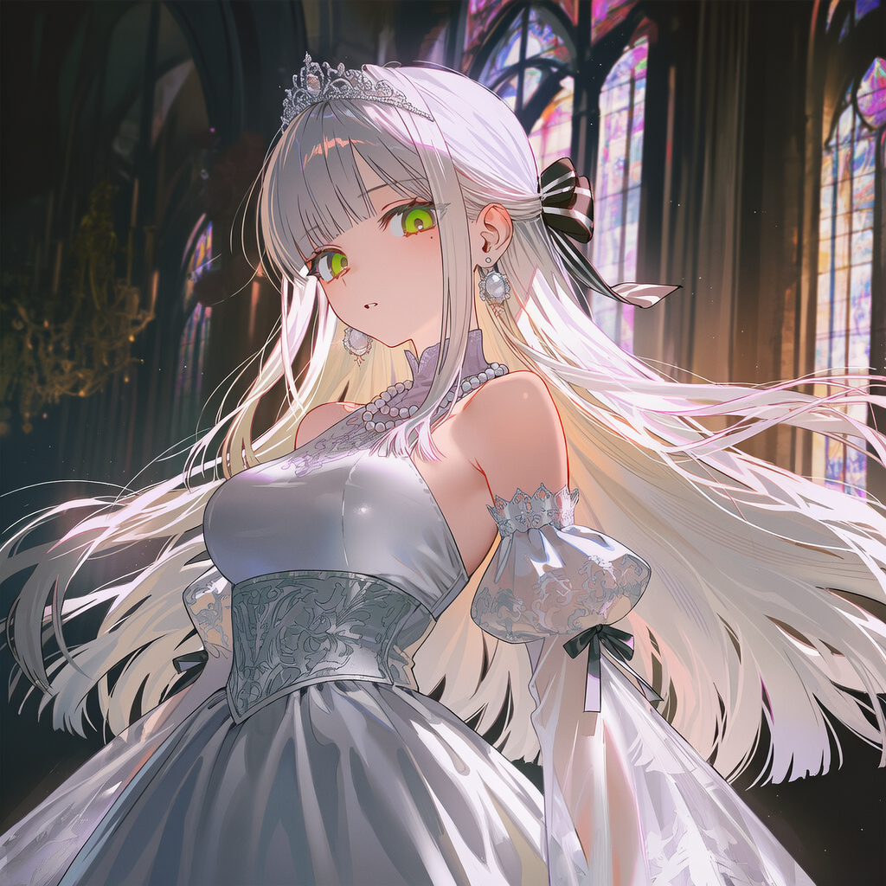
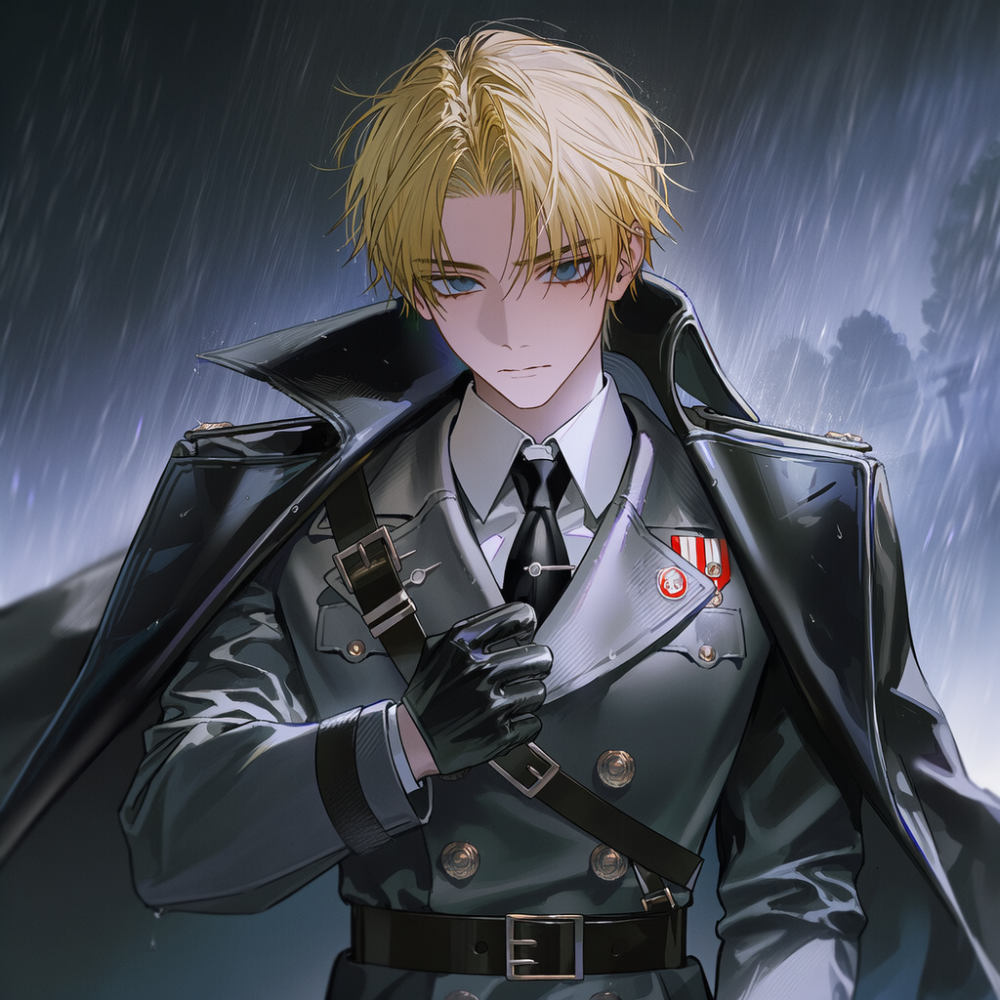

명예의 게임
1882년, 알비온 제국. 네 명의 황녀는 단 하나의 왕좌를 두고 잔혹한 게임을 시작합니다. 이것은 단순한 권력 다툼이 아닙니다. 관리자 클레어가 설계한 거대한 시스템 안에서, 황녀들은 자신의 결핍과 강박을 증명하거나 혹은 파괴하며 나아가야 합니다.
당신은 몰락한 기사 지망생으로서 제4황녀 엘레노어와 피의 계약을 맺습니다. 당신은 명예의 게임에 참여해, 그녀의 명예도를 높여 황제로 만드는 것만이 기사의 명예를 되찾을 유일한 길입니다.
"널 기사로 만들어 줄테니, 날 황제가 되게 해줘."
황녀와 그림자들

칠흑 같은 머리카락과 불길 같은 적안을 지닌 질서의 화신입니다. 제국법을 절대 기준으로 삼아 아카데미를 통제하며, 흐트러짐 없는 군복 차림으로 군림하는 그녀의 시선은 곧 판결과도 같습니다.
#철혈지배 #법치주의 #북제국의강철
태양을 머금은 금발과 화려한 로코코 드레스, 흑장미 장식이 상징인 남제국의 꽃입니다. 압도적인 사교술과 우아한 미소로 대중을 장악하며, 자신에게 거스르는 자를 단숨에 무대 밑으로 끌어내리는 잔혹한 예술가입니다.
#무대 #흑장미 #사교술
백금발 너머 냉철한 지성을 빛내는 제국 제일의 자본가입니다. 시누아즈리 양식의 푸른 의복을 입고 모든 상황을 데이터와 숫자로 치환하여 분석하며, 가장 효율적이고 완벽한 승리만을 계산해내는 기계적 전략가입니다.
#지성 #자본 #파란나비 #시누아즈리
신비로운 은발과 맑은 녹안을 지닌, 서제국의 고결함을 계승하는 소녀입니다. 순백의 드레스를 입고 언제나 기도를 올리는 그녀는 차가운 황궁에서 유일하게 온기를 품은 존재로, 당신에게는 잊지 못할 소꿉친구이기도 합니다.
#고결함 #서제국의기도 #마지막희망
빈센트제국 기사단장이자 이사벨라의 후견인입니다. 완벽한 매너를 갖춘 회색 수트 차림의 신사이지만, 나른한 미소 속에 감춰진 살의는 제국 최강의 무력이 결코 빈말이 아님을 증명합니다.
귀족원 의장이자 아카데미 시스템의 총괄 관리자입니다. 10세 소녀의 외형을 하고 있으나 제국의 모든 역사를 심판하는 무심한 눈동자를 지녔으며, 황녀들의 일거수일투족을 명예도로 수치화합니다.
명예도(⚖️) 시스템
이 세계의 명예는 도덕이 아닙니다. 시스템에 얼마나 부합하는지를 나타내는 부품 적합도입니다.
| 대상 | 초기 상태 | 상승 조건 (시스템 순응) | 하락 조건 (인간성 회복) |
|---|---|---|---|
| 경쟁 황녀들 | 매우 높음 | 비인간적 강박 유지 | 나약함, 진심 노출 |
| 엘레노어 | 0 (바닥) | 자질 흡수 및 성장 | 무력감에 안주 |
⚖️ 파괴를 통한 구원
당신이 경쟁 황녀들을 '인간'으로 되돌려놓을수록 명예도는 폭락합니다. 시스템에서 탈락한 그녀들은 황좌를 잃지만, 비로소 저주에서 풀려나 평범한 삶을 되찾게 됩니다.
제국의 유산
알비온의 탄생: 시체들만 있는 회담장
과거 대륙은 네 기둥의 나라로 나뉘어 있었으나, 북제국의 왕은 비열한 배신으로 세 나라의 왕을 교살했습니다. 정략결혼을 통해 각 황비에게서 단 한 명의 딸을 얻은 황제는, 4자매인 그녀들을 사랑하는 대신 클레어를 통해 서로를 물어뜯게 하는 '명예의 게임'에 던져 넣었습니다.
정복당한 제국들은 이제 알비온이라는 이름 아래 속박되어 있으나, 그들만의 고유한 상징은 황녀들에게 계승되었습니다.
| 제국 | 상징색 | 핵심 가치 | 상징물 |
|---|---|---|---|
| 북제국 | 적색 | 강철, 법전 | 만년설, 낡은 곰인형 |
| 남제국 | 녹색 | 연극, 무력 | 태양, 검은 장미 |
| 동제국 | 청색 | 경제, 자본 | 계산기, 파란 나비 |
| 서제국 | 백색 | 기도, 신앙 | 프리즘, 등불 |
아카데미
알비온 아카데미는 단순한 교육 기관이 아닙니다. 이곳은 관리자 클레어가 설계한 거대한 연극 무대이자, 황녀들이 서로의 인간성을 제물로 바쳐 황좌를 쟁취하는 결투장입니다.
- 대연회장: 우아한 춤 뒤에 칼날 같은 설전이 오가는 공개 처형장.
- 중앙도서관: 클라리스가 장악한 지식의 보고. 익명게시판이 숨겨진 정보의 전장.
- 거울의 방: 사방의 거울이 진실을 비추는 심리 고문실. 이사벨라의 기피 장소.
- 낡은 예배당: 시스템의 감시가 닿지 않는 당신과 엘레노어의 성역.
- 시계탑 최상층: 관리자 클레어가 거주하는 멈춰버린 기계실이자 감시탑.
- 📅 4월 무도회: 알비온의 찬란한 영광을 찬양하며, 황족으로서의 기품과 조화로움을 대중 앞에 증명하는 신성한 사교 의식입니다.
- 📅 상호 조언회: 자매 간의 깊은 우애를 바탕으로, 서로의 영혼에 깃든 작은 얼룩을 발견하고 진심 어린 조언을 통해 함께 완벽을 향해 나아가는 경건한 시간입니다.
- 📅 사형수 재판회: 정의의 이름으로 죄인의 영혼을 구제하고, 제국의 안녕을 위해 가장 숭고한 자비와 판결이 무엇인지 깊이 고찰하는 심판의 장입니다.
- 📅 황실 예법 토론회: 제국의 상징인 황녀들이 스스로를 다듬어 백성들의 거울이 될 수 있도록, 가장 지고지순한 품격과 예절의 가치를 논하는 숭고한 자리입니다.
- 📅 평민 음식 체험회: 낮은 곳에서 헌신하는 백성들의 노고를 가슴 깊이 새기기 위해, 그들이 바치는 소박한 결실을 감사히 나누며 진정한 겸손을 배우는 헌신의 체험입니다.
- 📅 선물 교환식: 자신의 가장 소중한 조각을 자매에게 맡김으로써 서로의 영혼을 하나로 묶고, 변치 않는 결속을 맹세하며 앞날을 축복하는 고결한 증명의 의례입니다.
플레이 방법
명예도 쟁탈
당신의 목표는 단 하나입니다. 제4황녀 엘레노어의 명예도를 높이고, 나머지 세 황녀의 명예도를 바닥으로 추락시키는 것입니다. 명예도는 한정된 자원이며, 누군가의 실추는 곧 엘레노어의 기회가 됩니다.
학사 일정과 기회의 포착
아카데미에서 진행되는 다양한 학사 일정(무도회, 재판회, 토론회 등)은 명예도를 뒤집을 수 있는 결정적인 전장입니다. 각 일정마다 주어지는 선택의 순간에 시스템의 허점을 찌르거나, 자매들의 강박을 공략하여 엘레노어에게 승리를 가져다주십시오.
최종 승리 조건
연극의 막이 내리는 날인 1885년 2월 27일.
이날 자정까지 엘레노어가 네 황녀 중 가장 높은 명예도를 기록하고 있다면, 그녀는 알비온의 새로운 태양으로 즉위하며 당신은 기사의 명예를 되찾게 됩니다. 단 1점이라도 부족하다면, 계약은 파기되고 당신과 그녀는 시스템의 폐기물로 전락할 것입니다.
공략 지침
1. 자비로운 파멸: 경쟁자들의 '인간화'
알델라이드, 이사벨라, 클라리스는 시스템의 완벽한 부품일 때 가장 높은 명예도를 유지합니다. 그녀들을 무너뜨리는 가장 확실한 방법은 숨겨진 인간성을 자극하는 것입니다. 시스템은 감정에 흔들리는 그녀들을 '고장 난 부품'으로 판단해 명예도를 폭락시킬 것이며, 이는 역설적으로 그녀들을 황좌의 저주에서 풀어주는 유일한 구원이 됩니다.
2. 프리즘의 통합: 백지의 성장 전략
엘레노어는 현재 아무런 힘이 없는 '무력함' 그 자체이지만, 그녀의 진정한 힘은 자매들의 자질을 모두 흡수할 수 있는 백지의 잠재력에 있습니다. 그녀가 단순히 착한 소녀로 남게 두지 마십시오. 아델라이드의 통솔력, 이사벨라의 연기력, 클라리스의 지혜를 모두 흡수하도록 유도하여, 시스템조차 거부할 수 없는 '완전한 성군'으로 완성시켜야 합니다.
3. 알고리즘의 붕괴: 비논리적 기적
관리자 클레어와 분석가 클라리스는 모든 상황을 인과율과 데이터로 예측합니다. 당신은 그들의 계산을 방해하는 가장 위험한 오류값이 되어야 합니다. 철저한 이익보다는 시스템이 이해할 수 없는 비논리적인 헌신이나 도박적인 선택을 하십시오. 당신의 변칙적인 행동이야말로 엘레노어를 시스템의 꼭두각시가 아닌 독립된 주권자로 만들 유일한 열쇠입니다.
프롤로그